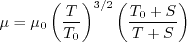

Return to: 3D Modified Supersonic Square Duct Validation for Numerical Analysis Intro Page
Return to: Turbulence Modeling Resource Home Page
TURBULENCE MODEL NUMERICAL ANALYSIS
3D Modified Supersonic Square Duct Validation
SA-QCR2000 Model Results (old)
Link to SA-QCR2000 equations
NOTE: These are older results (pre-2021). Updated results can be found at:
3D Modified Supersonic Square Duct Validation, SA-QCR2000 Model Results.
Results are shown for the 3D supersonic square duct at M=3.9, Re=508,000 based on channel height, reference temperature
of 520 R.
Two different CFD codes (FUN3D and USM3D) have been employed.
Results here
are for the SA-QCR2000 variant of the SA model.
For both codes, the farfield value of the Spalart turbulence variable is
 .
In both codes the Prandtl number Pr is taken to be constant at 0.72, and turbulent Prandtl
number Prt is taken to be constant at 0.9.
The dynamic viscosity is computed using
Sutherland's Law (See White, F. M., "Viscous Fluid Flow," McGraw Hill, New York, 1974, p. 28).
In Sutherland's Law, the local value of dynamic viscosity is determined by plugging the local value of temperature
(T) into the following formula:
.
In both codes the Prandtl number Pr is taken to be constant at 0.72, and turbulent Prandtl
number Prt is taken to be constant at 0.9.
The dynamic viscosity is computed using
Sutherland's Law (See White, F. M., "Viscous Fluid Flow," McGraw Hill, New York, 1974, p. 28).
In Sutherland's Law, the local value of dynamic viscosity is determined by plugging the local value of temperature
(T) into the following formula:
- 
where
 ,
,
 , and
, and
 .
The same formula can be found online
(with temperature constants given in degrees K and some small conversion differences).
Note that in terms of the reference quantities for this particular case, Sutherland's Law can equivalently be written:
.
The same formula can be found online
(with temperature constants given in degrees K and some small conversion differences).
Note that in terms of the reference quantities for this particular case, Sutherland's Law can equivalently be written:

where
 is the reference dynamic viscosity that corresponds to the freestream in this case, and
freestream
is the reference dynamic viscosity that corresponds to the freestream in this case, and
freestream  is 520R. This latter form may be more convenient for nondimensional codes.
(Specific details regarding an implementation of Sutherland's Law in nondimensional codes can be found in
handwritten notes describing Sutherland's Law in CFL3D and FUN3D.)
is 520R. This latter form may be more convenient for nondimensional codes.
(Specific details regarding an implementation of Sutherland's Law in nondimensional codes can be found in
handwritten notes describing Sutherland's Law in CFL3D and FUN3D.)
Note that FUN3D and USM3D both ran this
case with first order spatial accuracy on the turbulence advection term.
Plots below show centerline velicity as a function of x. Results behave similarly between the two codes.
Results that generated the above plots can be found in the following data files:
fun3d_centerline_u.dat,
usm3d_centerline_u.dat.
The first plot below shows grid convergence of centerline u-velocity at x/D=40, while the second plot shows
the same thing at x/D=50. The two codes are in reasonable agreement, but are not converging to
precisely the same results as the grid is refined. The reason for this slight offset is not known.
Results that generated the above plots can be found in the following data files:
fun3d_convergence_centerline_u.dat,
usm3d_convergence_centerline_u.dat.
The u-velocity profiles are shown below for a diagonal cut and a vertical cut at x/D=40.
The two codes agree reasonably well.
Results that generated the above plots can be found in the following data files:
fun3d_u_diag_40.dat,
fun3d_u_vert_40.dat,
usm3d_u_diag_40.dat,
usm3d_u_vert_40.dat.
The u-velocity profiles are shown below for a diagonal cut and a vertical cut at x/D=50.
The two codes agree reasonably well.
Results that generated the above plots can be found in the following data files:
fun3d_u_diag_50.dat,
fun3d_u_vert_50.dat,
usm3d_u_diag_50.dat,
usm3d_u_vert_50.dat.
The skin friction coefficient along z at x/D=40 is shown below for FUN3D and USM3D.
Results that generated the above plots can be found in the following data files:
fun3d_cf_40.dat,
usm3d_cf_40.dat.
The skin friction coefficient along z at x/D=50 is shown below for FUN3D and USM3D.
Results that generated the above plots can be found in the following data files:
fun3d_cf_50.dat,
usm3d_cf_50.dat.
Return to: 3D Modified Supersonic Square Duct Validation for Numerical Analysis Intro Page
Return to: Turbulence Modeling Resource Home Page
Privacy Act Statement
Accessibility Statement
Responsible NASA Official:
Ethan Vogel
Page Curator:
Clark Pederson
Last Updated: 11/05/2021